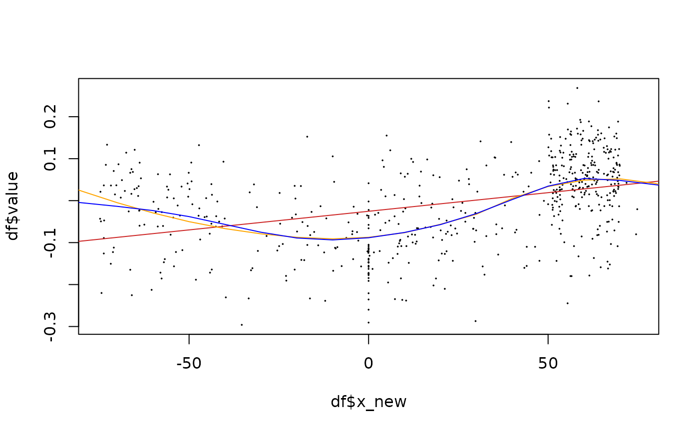

Useful for boiling down the multiple permutations after quake().
Usage
fit_lm(
df,
y = y,
formula_rhs = x_new,
by = NULL,
x_pred = cutter_number(df, 30, x_new),
k = k,
.keep_mod = FALSE,
...
)
fit_gam(
df,
y = y,
formula_rhs = s(x_new, bs = "cs"),
by = NULL,
x_pred = cutter_number(df, 30, x_new),
k = k,
.keep_mod = FALSE,
...
)
fit_loess(
df,
y = y,
formula_rhs = x_new,
by = NULL,
x_pred = cutter_number(df, 30, x_new),
k = k,
.keep_mod = FALSE,
...
)Arguments
- df
tibble()typically returned byquake()- y
colname of the value of interest. Default to
y.- formula_rhs
the right hand-side of the
stats::formula()to be used. Depending on the function, different defaults are used. See Usage section above.- by
colname for grouping structure (besides
k). Default toNULL- x_pred
the sequence of x for which to predict new values after fitting
- k
colname for iteration . Default to
k.- .keep_mod
logical whether to keep regression models and index of fit quality. See Details
- ...
additional parameters to be passed to main fitting functions. See Examples
Details
x_pred can be passed directly as a vector of numeric. By default,
cutter_number(df, 30, x_new) is used so that 30 groups of approximately
equal numbers of observations are made using the new x values, ie likely to cover
the range of possible x values.
formula_rhs correspond to the right hand side of the formula. It you want to
fit using, say y~x_new, this corresponds only to x_new. This saves typing y~
because it is already provided by the y argument. You can pass any stats::formula() you want.
For instance x_new^2 + x_new -1 would correspond to a quadratic model with no intercept.
See stats::formula() to stick with this grammar.
Functions
fit_lm: fitting using linear modelfit_gam: fitting using generalised additive models with smoothness estimationfit_loess: fitting using local polynomial regression
Motivation
These helpers wrap stats::loess(), stats::lm(), mgcv::gam() and make
the assumption that you know what you are doing: ie the models are appropriate
and their conditions respected. They all :
fit a model on each permutation (and group-wise if
byis provided).predict new y values using stats::predict on this model and for fixed
x_predvalues.
The main motivation is to generalize on many permutations what you would do on original data:
find a model that fits them and try to represent trends using it. In practice, when you're
adding ggplot2::geom_smooth to a graph, that's exactly what you do, even if ggplot2 can largely
take care of the modelling aspect.
The second motivation is to boil down the randomized x values into fixed x values,
that you provide to the function with the argument x_pred, and for which
predicted y values will be calculated using stats::predict. The price to pay is
to fit models but the benefit is that you cant test differences between groups
more easily for each of these fixed x values, that discretize your temporal range.
Besides testing, graphical comparisons are eased too, because desriptors such as extrema, other intermediate quantiles, average, etc. can be calculated for these fixed x-values. This is the purpose of the main spaghetti plot.
The last (and not least) motivation is to assess the quality of such fitting functions.
Using .keep_mod=TRUE gives a glimpse to it by providing indices such as
the adjusted r^2 (for lm and gam), and the residual standard deviation (for loess)
for each permutation. But it also retain each model so that you can access other components
of interest such as coefficients, p-values, etc.
Note that you do not need fitting to discretize values, you can also bin() them
on requested x slices. That still allows testing minus the model intermediate.
Finally, if you only want a graphical approach, you can directly use spaghetti0
directly after quake()
Examples
# Show fitter on a single iteration
df <- animals_q %>% dplyr::filter(k==1, taxa=="cat")
plot(df$x_new, df$value, pch=20, cex=0.2)
x_pred <- seq(-100, 100, 10)
# use fitting functions
lm_fit <- fit_lm(df, y=value, x_pred=x_pred, span=0.5) # you can specify arguments
#> * fitting with lm(value ~ x_new, span=0.5)
#> Warning: In lm.fit(x, y, offset = offset, singular.ok = singular.ok, ...) :
#> extra argument ‘span’ will be disregarded
loess_fit <- fit_loess(df, y=value, x_pred=x_pred)
#> * fitting with loess(value ~ x_new)
gam_fit <- fit_gam(df, y=value, x_pred=x_pred)
#> * fitting with gam(value ~ s(x_new, bs = "cs"))
# now draw them
lines(lm_fit$x_pred, lm_fit$y_pred, col="firebrick3")
lines(loess_fit$x_pred, loess_fit$y_pred, col="orange")
lines(gam_fit$x_pred, gam_fit$y_pred, col="blue")

# usually, you would use them on a full object returned by quake
# here we show the first 6 permutations along with their loess
cat <- animals_q %>% dplyr::filter(k<=6, taxa=="cat")
cat_lines <- cat %>% fit_loess(y=value, x_pred=x_pred)
#> * fitting with loess(value ~ x_new)
ggplot2::ggplot() +
ggplot2::geom_point(mapping=ggplot2::aes(x=x_new, y=value), data=cat, size=0.2) +
ggplot2::geom_line(mapping=ggplot2::aes(x=x_pred, y=y_pred, group=k), data=cat_lines, col="red") +
ggplot2::facet_wrap(~k, ncol=3) +
ggplot2::theme_minimal()
